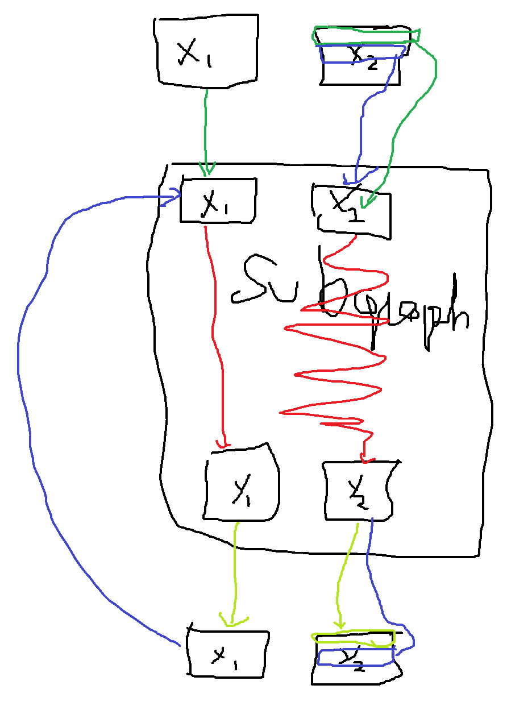

ONNX with Python¶
Next sections highlight the main functions used to build an ONNX graph with the Python API onnx offers.
A simple example: a linear regression¶
The linear regression is the most simple model in machine learning described by the following expression . We can see it as a function of three variables decomposed into y = Add(MatMul(X, A), B)). That what’s we need to represent with ONNX operators. The first thing is to implement a function with ONNX operators. ONNX is strongly typed. Shape and type must be defined for both input and output of the function. That said, we need four functions to build the graph among the make function:
make_tensor_value_info: declares a variable (input or output) given its shape and type
make_node: creates a node defined by an operation (an operator type), its inputs and outputs
make_graph: a function to create an ONNX graph with the objects created by the two previous functions
make_model: a last function with merges the graph and additional metadata
All along the creation, we need to give a name to every input, output of every node of the graph. Input and output of the graph are defined by onnx objects, strings are used to refer to intermediate results. This is how it looks like.
<<<
# imports
import numpy
from onnx import numpy_helper, TensorProto
from onnx.helper import (
make_model, make_node, set_model_props, make_tensor,
make_graph, make_tensor_value_info)
from mlprodict.plotting.text_plot import onnx_simple_text_plot
# inputs
# 'X' is the name, TensorProto.FLOAT the type, [None, None] the shape
X = make_tensor_value_info('X', TensorProto.FLOAT, [None, None])
A = make_tensor_value_info('A', TensorProto.FLOAT, [None, None])
B = make_tensor_value_info('B', TensorProto.FLOAT, [None, None])
# outputs, the shape is left undefined
Y = make_tensor_value_info('Y', TensorProto.FLOAT, None)
# nodes
# It creates a node defined by the operator type MatMul,
# 'X', 'A' are the inputs of the node, 'XA' the output.
node1 = make_node('MatMul', ['X', 'A'], ['XA'])
node2 = make_node('Add', ['XA', 'B'], ['Y'])
# from nodes to graph
# the graph is built from the list of nodes, the list of inputs,
# the list of outputs and a name.
graph = make_graph([node1, node2], # nodes
'lr', # a name
[X, A, B], # inputs
[Y]) # outputs
# onnx graph
# there is no metata in this case.
onnx_model = make_model(graph)
# the work is done, let's display it...
print(onnx_simple_text_plot(onnx_model))
An empty shape (None) means any shape, a shape defined as [None, None] tells this object is a tensor with two dimensions without any further precision. The ONNX graph can also be inspected by looking into the fields of each object of the graph.
<<<
import numpy
from onnx import numpy_helper, TensorProto
from onnx.helper import (
make_model, make_node, set_model_props, make_tensor,
make_graph, make_tensor_value_info)
from mlprodict.plotting.text_plot import onnx_simple_text_plot
def shape2tuple(shape):
return tuple(getattr(d, 'dim_value', 0) for d in shape.dim)
X = make_tensor_value_info('X', TensorProto.FLOAT, [None, None])
A = make_tensor_value_info('A', TensorProto.FLOAT, [None, None])
B = make_tensor_value_info('B', TensorProto.FLOAT, [None, None])
Y = make_tensor_value_info('Y', TensorProto.FLOAT, None)
node1 = make_node('MatMul', ['X', 'A'], ['XA'])
node2 = make_node('Add', ['XA', 'B'], ['Y'])
graph = make_graph([node1, node2], 'lr', [X, A, B], [Y])
onnx_model = make_model(graph)
# the list of inputs
print('** inputs **')
print(onnx_model.graph.input)
# in a more nicely format
print('** inputs **')
for obj in onnx_model.graph.input:
print("name=%r dtype=%r shape=%r" % (
obj.name, obj.type.tensor_type.elem_type,
shape2tuple(obj.type.tensor_type.shape)))
# the list of outputs
print('** outputs **')
print(onnx_model.graph.output)
# in a more nicely format
print('** outputs **')
for obj in onnx_model.graph.output:
print("name=%r dtype=%r shape=%r" % (
obj.name, obj.type.tensor_type.elem_type,
shape2tuple(obj.type.tensor_type.shape)))
# the list of nodes
print('** nodes **')
print(onnx_model.graph.node)
# in a more nicely format
print('** nodes **')
for node in onnx_model.graph.node:
print("name=%r type=%r input=%r output=%r" % (
node.name, node.op_type, node.input, node.output))
>>>
** inputs **
[name: "X"
type {
tensor_type {
elem_type: 1
shape {
dim {
}
dim {
}
}
}
}
, name: "A"
type {
tensor_type {
elem_type: 1
shape {
dim {
}
dim {
}
}
}
}
, name: "B"
type {
tensor_type {
elem_type: 1
shape {
dim {
}
dim {
}
}
}
}
]
** inputs **
name='X' dtype=1 shape=(0, 0)
name='A' dtype=1 shape=(0, 0)
name='B' dtype=1 shape=(0, 0)
** outputs **
[name: "Y"
type {
tensor_type {
elem_type: 1
}
}
]
** outputs **
name='Y' dtype=1 shape=()
** nodes **
[input: "X"
input: "A"
output: "XA"
op_type: "MatMul"
, input: "XA"
input: "B"
output: "Y"
op_type: "Add"
]
** nodes **
name='' type='MatMul' input=['X', 'A'] output=['XA']
name='' type='Add' input=['XA', 'B'] output=['Y']
The tensor type is an integer (= 1). The following array gives the equivalent type with numpy.
<<<
import pprint
from onnx.mapping import TENSOR_TYPE_TO_NP_TYPE
pprint.pprint(TENSOR_TYPE_TO_NP_TYPE)
>>>
{1: dtype('float32'),
2: dtype('uint8'),
3: dtype('int8'),
4: dtype('uint16'),
5: dtype('int16'),
6: dtype('int32'),
7: dtype('int64'),
8: dtype('O'),
9: dtype('bool'),
10: dtype('float16'),
11: dtype('float64'),
12: dtype('uint32'),
13: dtype('uint64'),
14: dtype('complex64'),
15: dtype('complex128'),
16: dtype('float16')}
Serialization¶
The model needs to be saved to be deployed. ONNX is based on protobuf. It minimizes the space needed to save the graph on disk. Every object (see onnx classes) in onnx can be serialized with method SerializeToString. That’s the case for the whole model.
<<<
import numpy
from onnx import numpy_helper, TensorProto
from onnx.helper import (
make_model, make_node, set_model_props, make_tensor,
make_graph, make_tensor_value_info)
from mlprodict.plotting.text_plot import onnx_simple_text_plot
def shape2tuple(shape):
return tuple(getattr(d, 'dim_value', 0) for d in shape.dim)
X = make_tensor_value_info('X', TensorProto.FLOAT, [None, None])
A = make_tensor_value_info('A', TensorProto.FLOAT, [None, None])
B = make_tensor_value_info('B', TensorProto.FLOAT, [None, None])
Y = make_tensor_value_info('Y', TensorProto.FLOAT, None)
node1 = make_node('MatMul', ['X', 'A'], ['XA'])
node2 = make_node('Add', ['XA', 'B'], ['Y'])
graph = make_graph([node1, node2], 'lr', [X, A, B], [Y])
onnx_model = make_model(graph)
# The serialization
with open("linear_regression.onnx", "wb") as f:
f.write(onnx_model.SerializeToString())
# display
print(onnx_simple_text_plot(onnx_model))
>>>
opset: domain='' version=16
input: name='X' type=dtype('float32') shape=(0, 0)
input: name='A' type=dtype('float32') shape=(0, 0)
input: name='B' type=dtype('float32') shape=(0, 0)
MatMul(X, A) -> XA
Add(XA, B) -> Y
output: name='Y' type=dtype('float32') shape=()
The graph can be restored with function load:
<<<
from onnx import load
from mlprodict.plotting.text_plot import onnx_simple_text_plot
with open("linear_regression.onnx", "rb") as f:
onnx_model = load(f)
# display
print(onnx_simple_text_plot(onnx_model))
>>>
opset: domain='' version=16
input: name='X' type=dtype('float32') shape=(0, 0)
input: name='A' type=dtype('float32') shape=(0, 0)
input: name='B' type=dtype('float32') shape=(0, 0)
MatMul(X, A) -> XA
Add(XA, B) -> Y
output: name='Y' type=dtype('float32') shape=()
It looks exactly the same. Any model can be serialized this way unless they are bigger than 2 Gb. protobuf is limited to size smaller than this threshold. Next sections will show how to overcome that limit.
Initializer, default value¶
The previous model assumed the coefficients of the linear regression were also input of the model. That’s not very convenient. They should be part of the model itself as constant or initializer to follow onnx semantic. Next example modifies the previous one to change inputs A and B into initializers. The package implements two functions to convert from numpy into onnx and the other way around (see array).
onnx.numpy_helper.to_array: converts from onnx to numpyonnx.numpy_helper.from_array: converts from numpy to onnx
<<<
import numpy
from onnx import numpy_helper, TensorProto
from onnx.helper import (
make_model, make_node, set_model_props, make_tensor, make_graph,
make_tensor_value_info)
from mlprodict.plotting.text_plot import onnx_simple_text_plot
# initializers
value = numpy.array([0.5, -0.6], dtype=numpy.float32)
A = numpy_helper.from_array(value, name='A')
value = numpy.array([0.4], dtype=numpy.float32)
C = numpy_helper.from_array(value, name='C')
# the part which does not change
X = make_tensor_value_info('X', TensorProto.FLOAT, [None, None])
Y = make_tensor_value_info('Y', TensorProto.FLOAT, None)
node1 = make_node('MatMul', ['X', 'A'], ['AX'])
node2 = make_node('Add', ['AX', 'C'], ['Y'])
graph = make_graph([node1, node2], 'lr', [X], [Y], [A, C])
onnx_model = make_model(graph)
print(onnx_simple_text_plot(onnx_model))
>>>
opset: domain='' version=16
input: name='X' type=dtype('float32') shape=(0, 0)
init: name='A' type=dtype('float32') shape=(0,) -- array([ 0.5, -0.6], dtype=float32)
init: name='C' type=dtype('float32') shape=(0,) -- array([0.4], dtype=float32)
MatMul(X, A) -> AX
Add(AX, C) -> Y
output: name='Y' type=dtype('float32') shape=()
Again, it is possible to go through the onnx structure to check how the initializers look like.
<<<
import numpy
from onnx import numpy_helper, TensorProto
from onnx.helper import (
make_model, make_node, set_model_props, make_tensor, make_graph,
make_tensor_value_info)
from mlprodict.plotting.text_plot import onnx_simple_text_plot
# initializers
value = numpy.array([0.5, -0.6], dtype=numpy.float32)
A = numpy_helper.from_array(value, name='A')
value = numpy.array([0.4], dtype=numpy.float32)
C = numpy_helper.from_array(value, name='C')
# the part which does not change
X = make_tensor_value_info('X', TensorProto.FLOAT, [None, None])
Y = make_tensor_value_info('Y', TensorProto.FLOAT, None)
node1 = make_node('MatMul', ['X', 'A'], ['AX'])
node2 = make_node('Add', ['AX', 'C'], ['Y'])
graph = make_graph([node1, node2], 'lr', [X], [Y], [A, C])
onnx_model = make_model(graph)
print('** intializer **')
for init in onnx_model.graph.initializer:
print(init)
>>>
** intializer **
dims: 2
data_type: 1
name: "A"
raw_data: "\000\000\000?\232\231\031\277"
dims: 1
data_type: 1
name: "C"
raw_data: "\315\314\314>"
The type is defined as integer as well with the same meaning. In this second example, there is only one input left. Input A and B were removed. They could be kept. In that case, they are optional: every initiliazer sharing the same name as input is considered as a default value. It replaces the input if this one is not given.
Attributes¶
Some operators need attributes such as Transpose operator. Let’s build the graph for expression or y = Add(MatMul(X, Transpose(A)) + B). Tranpose needs an attribute defining the permutation of axes: perm=[1, 0]. It is added as a named attribute in function make_node.
<<<
import numpy
from onnx import numpy_helper, TensorProto
from onnx.helper import (
make_model, make_node, set_model_props, make_tensor,
make_graph, make_tensor_value_info)
from mlprodict.plotting.text_plot import onnx_simple_text_plot
# unchanged
X = make_tensor_value_info('X', TensorProto.FLOAT, [None, None])
A = make_tensor_value_info('A', TensorProto.FLOAT, [None, None])
B = make_tensor_value_info('B', TensorProto.FLOAT, [None, None])
Y = make_tensor_value_info('Y', TensorProto.FLOAT, None)
# added
node_transpose = make_node('Transpose', ['A'], ['tA'], perm=[1, 0])
# unchanged except A is replaced by tA
node1 = make_node('MatMul', ['X', 'tA'], ['XA'])
node2 = make_node('Add', ['XA', 'B'], ['Y'])
# node_transpose is added to the list
graph = make_graph([node_transpose, node1, node2],
'lr', [X, A, B], [Y])
onnx_model = make_model(graph)
# the work is done, let's display it...
print(onnx_simple_text_plot(onnx_model))
>>>
opset: domain='' version=16
input: name='X' type=dtype('float32') shape=(0, 0)
input: name='A' type=dtype('float32') shape=(0, 0)
input: name='B' type=dtype('float32') shape=(0, 0)
Transpose(A, perm=[1,0]) -> tA
MatMul(X, tA) -> XA
Add(XA, B) -> Y
output: name='Y' type=dtype('float32') shape=()
Opset and metadata¶
Let’s load the ONNX file previously created and check what kind of metadata it has.
<<<
from onnx import load
with open("linear_regression.onnx", "rb") as f:
onnx_model = load(f)
for field in ['doc_string', 'domain', 'functions',
'ir_version', 'metadata_props', 'model_version',
'opset_import', 'producer_name', 'producer_version',
'training_info']:
print(field, getattr(onnx_model, field))
>>>
doc_string
domain
functions []
ir_version 8
metadata_props []
model_version 0
opset_import [version: 16
]
producer_name
producer_version
training_info []
Most of them are empty because it was not filled when the ONNX graph was created. Two of them have a value:
<<<
from onnx import load
with open("linear_regression.onnx", "rb") as f:
onnx_model = load(f)
print("ir_version:", onnx_model.ir_version)
for opset in onnx_model.opset_import:
print("opset domain=%r version=%r" % (opset.domain, opset.version))
>>>
ir_version: 8
opset domain='' version=16
IR defined the version of ONNX language. Opset defines the version of operators being used. Without any precision, ONNX uses the latest version available coming from the installed package. Another one can be used.
<<<
from onnx import load
with open("linear_regression.onnx", "rb") as f:
onnx_model = load(f)
del onnx_model.opset_import[:]
opset = onnx_model.opset_import.add()
opset.domain = ''
opset.version = 14
for opset in onnx_model.opset_import:
print("opset domain=%r version=%r" % (opset.domain, opset.version))
>>>
opset domain='' version=14
Any opset can be used as long as all operators are defined the way ONNX specifies it. Version 5 of operator Reshape defines the shape as an input and not as an attribute like in version 1. The opset tells which specifications is followed while describing the graph.
The other metadata can be used to store any information, to store information about the way the model was generated, a way to distinguish a model from another one with a version number.
<<<
from onnx import load, helper, TrainingInfoProto
with open("linear_regression.onnx", "rb") as f:
onnx_model = load(f)
onnx_model.model_version = 15
onnx_model.producer_name = "something"
onnx_model.producer_version = "some other thing"
onnx_model.doc_string = "documentation about this model"
prop = onnx_model.metadata_props
data = dict(key1="value1", key2="value2")
helper.set_model_props(onnx_model, data)
print(onnx_model)
>>>
ir_version: 8
producer_name: "something"
producer_version: "some other thing"
model_version: 15
doc_string: "documentation about this model"
graph {
node {
input: "X"
input: "A"
output: "XA"
op_type: "MatMul"
}
node {
input: "XA"
input: "B"
output: "Y"
op_type: "Add"
}
name: "lr"
input {
name: "X"
type {
tensor_type {
elem_type: 1
shape {
dim {
}
dim {
}
}
}
}
}
input {
name: "A"
type {
tensor_type {
elem_type: 1
shape {
dim {
}
dim {
}
}
}
}
}
input {
name: "B"
type {
tensor_type {
elem_type: 1
shape {
dim {
}
dim {
}
}
}
}
}
output {
name: "Y"
type {
tensor_type {
elem_type: 1
}
}
}
}
opset_import {
version: 16
}
metadata_props {
key: "key1"
value: "value1"
}
metadata_props {
key: "key2"
value: "value2"
}
Field training_info can be used to store additional graphs. See training_tool_test.py to see how it works.
Subgraph: test and loops¶
They are usually grouped in a category called control flow. It is usually better to avoid them as they are not as efficient as the matrix operation are much faster and optimized.
If¶
A test can be implemented with operator If. It executes one subgraph or another depending on one boolean. This is not used very often as a function usually needs the result of many comparisons in a batch. The following example computes the sum of all floats in a matrix based on the sign, returns 1 or -1.
<<<
import numpy
import onnx
from onnx.helper import (
make_node, make_graph, make_model, make_tensor_value_info)
from onnx.numpy_helper import from_array
from onnxruntime import InferenceSession
from mlprodict.plotting.text_plot import onnx_simple_text_plot
# initializers
value = numpy.array([0], dtype=numpy.float32)
zero = from_array(value, name='zero')
# Same as before, X is the input, Y is the output.
X = make_tensor_value_info('X', onnx.TensorProto.FLOAT, None)
Y = make_tensor_value_info('Y', onnx.TensorProto.FLOAT, None)
# The node building the condition. The first one
# sum over all axes.
rsum = make_node('ReduceSum', ['X'], ['rsum'])
# The second compares the result to 0.
cond = make_node('Greater', ['rsum', 'zero'], ['cond'])
# Builds the graph is the condition is True.
# Input for then
then_out = make_tensor_value_info(
'then_out', onnx.TensorProto.FLOAT, [5])
# The constant to return.
then_cst = from_array(numpy.array([1]).astype(numpy.float32))
# The only node.
then_const_node = make_node(
'Constant', inputs=[],
outputs=['then_out'],
value=then_cst, name='cst1')
# And the graph wrapping these elements.
then_body = make_graph(
[then_const_node], 'then_body',
[], [then_out])
# Same process for the else branch.
else_out = make_tensor_value_info(
'else_out', onnx.TensorProto.FLOAT, [5])
else_cst = from_array(numpy.array([-1]).astype(numpy.float32))
else_const_node = make_node(
'Constant', inputs=[],
outputs=['else_out'],
value=else_cst, name='cst2')
else_body = make_graph(
[else_const_node], 'else_body',
[], [else_out])
# Finally the node If taking both graphs as attributes.
if_node = onnx.helper.make_node(
'If',
inputs=['cond'],
outputs=['Y'],
then_branch=then_body,
else_branch=else_body)
# The final graph.
graph = make_graph([if_node, rsum, cond], 'if', [X], [Y], [zero])
onnx_model = make_model(graph)
# Let's freeze the opset.
del onnx_model.opset_import[:]
opset = onnx_model.opset_import.add()
opset.domain = ''
opset.version = 15
# Save.
with open("onnx_if_sign.onnx", "wb") as f:
f.write(onnx_model.SerializeToString())
# Let's see the output.
sess = InferenceSession(onnx_model.SerializeToString())
x = numpy.ones((3, 2), dtype=numpy.float32)
res = sess.run(None, {'X': x})
# It works.
print(res)
# Some display.
print(onnx_simple_text_plot(onnx_model))
>>>
[array([1.], dtype=float32)]
opset: domain='' version=15
input: name='X' type=dtype('float32') shape=()
init: name='zero' type=dtype('float32') shape=(0,) -- array([0.], dtype=float32)
ReduceSum(X) -> rsum
Greater(rsum, zero) -> cond
If(cond) -> Y
output: name='Y' type=dtype('float32') shape=()
The whole is easier to visualize with the following image.
Both else and then branches are very simple. Node If could even be replace with a node Where and that would be faster. It becomes interesting when both branches are bigger and skipping one is more efficient.
Scan¶
Scan seems quite complex when reading the specifications. It is useful to loop over one dimension of a tensor and store the results in a preallocated tensor.
The following example implements a classic nearest neighbors for a regression problem. The first step consists in computing the pairwise distances between the input features X and the training set W: . It is followed by an operator TopK which extracts the k nearest neighbors.
<<<
import numpy
from onnx import numpy_helper, TensorProto
from onnx.helper import (
make_model, make_node, set_model_props, make_tensor, make_graph,
make_tensor_value_info)
from mlprodict.plotting.text_plot import onnx_simple_text_plot
# subgraph
initializers = []
nodes = []
inputs = []
outputs = []
value = make_tensor_value_info('next_in', 1, [None, 4])
inputs.append(value)
value = make_tensor_value_info('next', 1, [None])
inputs.append(value)
value = make_tensor_value_info('next_out', 1, [None, None])
outputs.append(value)
value = make_tensor_value_info('scan_out', 1, [None])
outputs.append(value)
node = make_node(
'Identity', ['next_in'], ['next_out'],
name='cdistd_17_Identity', domain='')
nodes.append(node)
node = make_node(
'Sub', ['next_in', 'next'], ['cdistdf_17_C0'],
name='cdistdf_17_Sub', domain='')
nodes.append(node)
node = make_node(
'ReduceSumSquare', ['cdistdf_17_C0'], ['cdistdf_17_reduced0'],
name='cdistdf_17_ReduceSumSquare', axes=[1], keepdims=0, domain='')
nodes.append(node)
node = make_node(
'Identity', ['cdistdf_17_reduced0'],
['scan_out'], name='cdistdf_17_Identity', domain='')
nodes.append(node)
graph = make_graph(nodes, 'OnnxIdentity',
inputs, outputs, initializers)
# main graph
initializers = []
nodes = []
inputs = []
outputs = []
opsets = {'': 15, 'ai.onnx.ml': 15}
target_opset = 15 # subgraphs
# initializers
list_value = [23.29599822460675, -120.86516699239603, -144.70495899914215, -260.08772982740413,
154.65272105889147, -122.23295157108991, 247.45232560871727, -182.83789715805776,
-132.92727431421793, 147.48710175784703, 88.27761768038069, -14.87785569894749,
111.71487894705504, 301.0518319089629, -29.64235742280055, -113.78493504731911,
-204.41218591022718, 112.26561056133608, 66.04032954135549,
-229.5428380626701, -33.549262642481615, -
140.95737409864623, -87.8145187836131,
-90.61397011283958, 57.185488100413366, 56.864151796743855, 77.09054590340892,
-187.72501631246712, -42.779503579806025, -
21.642642730674076, -44.58517761667535,
78.56025104939847, -23.92423223842056, 234.9166231927213, -73.73512816431007,
-10.150864499514297, -70.37105466673813, 65.5755688281476, 108.68676290979731, -78.36748960443065]
value = numpy.array(list_value, dtype=numpy.float64).reshape((2, 20))
tensor = numpy_helper.from_array(
value, name='knny_ArrayFeatureExtractorcst')
initializers.append(tensor)
list_value = [1.1394007205963135, -0.6848101019859314, -1.234825849533081, 0.4023416340351105,
0.17742614448070526, 0.46278226375579834, -
0.4017809331417084, -1.630198359489441,
-0.5096521973609924, 0.7774903774261475, -
0.4380742907524109, -1.2527953386306763,
-1.0485529899597168, 1.950775384902954, -
1.420017957687378, -1.7062702178955078,
1.8675580024719238, -0.15135720372200012, -
0.9772778749465942, 0.9500884413719177,
-2.5529897212982178, -0.7421650290489197, 0.653618574142456, 0.8644362092018127,
1.5327792167663574, 0.37816253304481506, 1.4693588018417358, 0.154947429895401,
-0.6724604368209839, -1.7262825965881348, -
0.35955315828323364, -0.8131462931632996,
-0.8707971572875977, 0.056165341287851334, -
0.5788496732711792, -0.3115525245666504,
1.2302906513214111, -0.302302747964859, 1.202379822731018, -0.38732680678367615,
2.269754648208618, -0.18718385696411133, -
1.4543657302856445, 0.04575851559638977,
-0.9072983860969543, 0.12898291647434235, 0.05194539576768875, 0.7290905714035034,
1.4940791130065918, -0.8540957570075989, -
0.2051582634449005, 0.3130677044391632,
1.764052391052246, 2.2408931255340576, 0.40015721321105957, 0.978738009929657,
0.06651721894741058, -0.3627411723136902, 0.30247190594673157, -0.6343221068382263,
-0.5108051300048828, 0.4283318817615509, -
1.18063223361969, -0.02818222902715206,
-1.6138978004455566, 0.38690251111984253, -
0.21274028718471527, -0.8954665660858154,
0.7610377073287964, 0.3336743414402008, 0.12167501449584961, 0.44386324286460876,
-0.10321885347366333, 1.4542734622955322, 0.4105985164642334, 0.14404356479644775,
-0.8877857327461243, 0.15634897351264954, -1.980796456336975, -0.34791216254234314]
value = numpy.array(list_value, dtype=numpy.float32).reshape((20, 4))
tensor = numpy_helper.from_array(value, name='Sc_Scancst')
initializers.append(tensor)
value = numpy.array([2], dtype=numpy.int64)
tensor = numpy_helper.from_array(value, name='To_TopKcst')
initializers.append(tensor)
value = numpy.array([2, -1, 2], dtype=numpy.int64)
tensor = numpy_helper.from_array(value, name='knny_Reshapecst')
initializers.append(tensor)
# inputs
value = make_tensor_value_info('input', 1, [None, 4])
inputs.append(value)
# outputs
value = make_tensor_value_info('variable', 1, [None, 2])
outputs.append(value)
# nodes
node = make_node(
'Scan', ['input', 'Sc_Scancst'], ['UU032UU', 'UU033UU'],
name='Sc_Scan', body=graph, num_scan_inputs=1, domain='')
nodes.append(node)
node = make_node(
'Transpose', ['UU033UU'], ['Tr_transposed0'],
name='Tr_Transpose', perm=[1, 0], domain='')
nodes.append(node)
node = make_node(
'Sqrt', ['Tr_transposed0'], ['Sq_Y0'],
name='Sq_Sqrt', domain='')
nodes.append(node)
node = make_node(
'TopK', ['Sq_Y0', 'To_TopKcst'], ['To_Values0', 'To_Indices1'],
name='To_TopK', largest=0, sorted=1, domain='')
nodes.append(node)
node = make_node(
'Flatten', ['To_Indices1'], ['knny_output0'],
name='knny_Flatten', domain='')
nodes.append(node)
node = make_node(
'ArrayFeatureExtractor',
['knny_ArrayFeatureExtractorcst', 'knny_output0'], ['knny_Z0'],
name='knny_ArrayFeatureExtractor', domain='ai.onnx.ml')
nodes.append(node)
node = make_node(
'Reshape', ['knny_Z0', 'knny_Reshapecst'], ['knny_reshaped0'],
name='knny_Reshape', allowzero=0, domain='')
nodes.append(node)
node = make_node(
'Transpose', ['knny_reshaped0'], ['knny_transposed0'],
name='knny_Transpose', perm=[1, 0, 2], domain='')
nodes.append(node)
node = make_node(
'Cast', ['knny_transposed0'], ['Ca_output0'],
name='Ca_Cast', to=TensorProto.FLOAT, domain='')
nodes.append(node)
node = make_node(
'ReduceMean', ['Ca_output0'], ['variable'],
name='Re_ReduceMean', axes=[2], keepdims=0, domain='')
nodes.append(node)
# graph
graph = make_graph(nodes, 'KNN regressor', inputs, outputs, initializers)
# model
onnx_model = make_model(graph)
onnx_model.ir_version = 8
onnx_model.producer_name = 'skl2onnx'
onnx_model.producer_version = ''
onnx_model.domain = 'ai.onnx'
onnx_model.model_version = 0
onnx_model.doc_string = ''
set_model_props(onnx_model, {})
# opsets
del onnx_model.opset_import[:] # pylint: disable=E1101
for dom, value in opsets.items():
op_set = onnx_model.opset_import.add()
op_set.domain = dom
op_set.version = value
with open("knnr.onnx", "wb") as f:
f.write(onnx_model.SerializeToString())
print(onnx_simple_text_plot(onnx_model))
>>>
opset: domain='' version=15
opset: domain='ai.onnx.ml' version=15
input: name='input' type=dtype('float32') shape=(0, 4)
init: name='knny_ArrayFeatureExtractorcst' type=dtype('float64') shape=(0,) -- array([ 23.296, -120.865, -144.705, -260.088, 154.653, -122.233,
247.452, -182.838, -132.927, 147.487, 88.278, -14.878,
111.715, 301.052, -29.642, -113.785, -204.412, 112.266,
66.04 , -229.543, -33.549, -140.957, -87.815, -90.614,
57.185, 56.864, 77.091, -187.725, -42.78 , -21.643,
-44.585, 78.56 , -23.924, 234.917, -73.735, -10.151,
-70.371, 65.576, 108.687, -78.367])
init: name='Sc_Scancst' type=dtype('float32') shape=(0,) -- array([ 1.139, -0.685, -1.235, 0.402, 0.177, 0.463, -0.402, -1.63 ,
-0.51 , 0.777, -0.438, -1.253, -1.049, 1.951, -1.42 , -1.706,
1.868, -0.151, -0.977, 0.95 , -2.553, -0.742, 0.654, 0.864,
1.533, 0.378, 1.469, 0.155, -0.672, -1.726, -0.36 , -0.813,
-0.871, 0.056, -0.579, -0.312, 1.23 , -0.302, 1.202, -0.387,
2.27 , -0.187, -1.454, 0.046, -0.907, 0.129, 0.052, 0.729,
1.494, -0.854, -0.205, 0.313, 1.764, 2.241, 0.4 , 0.979,
0.067, -0.363, 0.302, -0.634, -0.511, 0.428, -1.181, -0.028,
-1.614, 0.387, -0.213, -0.895, 0.761, 0.334, 0.122, 0.444,
-0.103, 1.454, 0.411, 0.144, -0.888, 0.156, -1.981, -0.348],
dtype=float32)
init: name='To_TopKcst' type=dtype('int64') shape=(0,) -- array([2])
init: name='knny_Reshapecst' type=dtype('int64') shape=(0,) -- array([ 2, -1, 2])
Scan(input, Sc_Scancst, num_scan_inputs=1) -> UU032UU, UU033UU
Transpose(UU033UU, perm=[1,0]) -> Tr_transposed0
Sqrt(Tr_transposed0) -> Sq_Y0
TopK(Sq_Y0, To_TopKcst, largest=0, sorted=1) -> To_Values0, To_Indices1
Flatten(To_Indices1) -> knny_output0
ArrayFeatureExtractor(knny_ArrayFeatureExtractorcst, knny_output0) -> knny_Z0
Reshape(knny_Z0, knny_Reshapecst, allowzero=0) -> knny_reshaped0
Transpose(knny_reshaped0, perm=[1,0,2]) -> knny_transposed0
Cast(knny_transposed0, to=1) -> Ca_output0
ReduceMean(Ca_output0, axes=[2], keepdims=0) -> variable
output: name='variable' type=dtype('float32') shape=(0, 2)
Visually it looks like the following:
The subgraph is executed by operator Scan. In this case, there is one scan input meaning the operator only builds one output.
node = make_node(
'Scan', ['X1', 'X2'], ['Y1', 'Y2'],
name='Sc_Scan', body=graph, num_scan_inputs=1, domain='')
At the first iteration, the subgraph gets X1 and the first row of X2. The graph produces two outputs. The first one replaces X1 in the next iteration, the second one is store in a container to form Y2. At the second iteration, second input of the subgraph is the second row of X2. Here is a short summary. Green is the first iteration, blue the second.
{kind=link}
Functions¶
As mentioned in previous chapter, functions can be used to shorten the code to build the model and offer more possibilities to the runtime running predictions to be faster if there exists a specific implementation of this function. If it is not the case, the runtime can still use the default implementation based on existing operators.
Function make_function is used to define a function. It works like a graph with less types. It is more like a template. This API may evolve. It does not include intializers either.
<<<
# imports
import numpy
from onnx import numpy_helper, TensorProto
from onnx.helper import (
make_model, make_node, set_model_props, make_tensor,
make_graph, make_tensor_value_info, make_opsetid,
make_function)
from mlprodict.plotting.text_plot import onnx_simple_text_plot
new_domain = 'custom'
opset_imports = [make_opsetid("", 14), make_opsetid(new_domain, 1)]
# Let's define a function for a linear regression
node1 = make_node('MatMul', ['X', 'A'], ['XA'])
node2 = make_node('Add', ['XA', 'B'], ['Y'])
linear_regression = make_function(
new_domain, # domain name
'LinearRegression', # function name
['X', 'A', 'B'], # input names
['Y'], # output names
[node1, node2], # nodes
opset_imports, # opsets
[]) # attribute names
# Let's use it in a graph.
X = make_tensor_value_info('X', TensorProto.FLOAT, [None, None])
A = make_tensor_value_info('A', TensorProto.FLOAT, [None, None])
B = make_tensor_value_info('B', TensorProto.FLOAT, [None, None])
Y = make_tensor_value_info('Y', TensorProto.FLOAT, None)
graph = make_graph(
[make_node('LinearRegression', ['X', 'A', 'B'], ['Y1'], domain=new_domain),
make_node('Abs', ['Y1'], ['Y'])],
'example',
[X, A, B], [Y])
onnx_model = make_model(
graph, opset_imports=opset_imports,
functions=[linear_regression]) # functions to add)
# the work is done, let's display it...
print(onnx_simple_text_plot(onnx_model))
>>>
opset: domain='' version=14
opset: domain='custom' version=1
input: name='X' type=dtype('float32') shape=(0, 0)
input: name='A' type=dtype('float32') shape=(0, 0)
input: name='B' type=dtype('float32') shape=(0, 0)
LinearRegression(X, A, B) -> Y1
Abs(Y1) -> Y
output: name='Y' type=dtype('float32') shape=()
----- function name=LinearRegression domain=custom
opset: domain='' version=14
opset: domain='custom' version=1
input: 'X'
input: 'A'
input: 'B'
MatMul(X, A) -> XA
Add(XA, B) -> Y
output: name='Y' type=? shape=?
Parsing¶
Module onnx provides a faster way to define a graph a lot easier to read. That’s easy to use when the graph is built in a single function, less easy when the graph is built from many different functions converting each piece of a machine learning pipeline.
<<<
import onnx.parser
from mlprodict.plotting.text_plot import onnx_simple_text_plot
input = '''
<
ir_version: 8,
opset_import: [ "" : 15]
>
agraph (float[I,J] X, float[] A, float[] B) => (float[I] Y) {
XA = MatMul(X, A)
Y = Add(XA, B)
}
'''
onnx_model = onnx.parser.parse_model(input)
print(onnx_simple_text_plot(onnx_model))
>>>
opset: domain='' version=15
input: name='X' type=dtype('float32') shape=(0, 0)
input: name='A' type=dtype('float32') shape=()
input: name='B' type=dtype('float32') shape=()
MatMul(X, A) -> XA
Add(XA, B) -> Y
output: name='Y' type=dtype('float32') shape=(0,)
This way is used to create small models but it is rarely used in converting libraries.
Checker and Shape Inference¶
onnx provides a function to check the model is valid. It checks input type or shapes whenever it can detect inconsistency. The following example multiplies two matrices of different types which is not allowed.
<<<
import onnx.parser
import onnx.checker
input = '''
<
ir_version: 8,
opset_import: [ "" : 15]
>
agraph (float[I,4] X, float[4,2] A, int[4] B) => (float[I] Y) {
XA = MatMul(X, A)
Y = Add(XA, B)
}
'''
onnx_model = onnx.parser.parse_model(input)
onnx.checker.check_model(onnx_model)
>>>
[runpythonerror]
Traceback (most recent call last):
exec(obj, globs, loc)
File "", line 18, in <module>
File "", line 16, in run_python_script_140034456629696
File "/var/lib/jenkins/workspace/onnxcustom/onnxcustom_UT_39_std/_venv/lib/python3.9/site-packages/onnx/parser.py", line 17, in parse_model
raise ParseError(msg)
onnx.parser.ParseError: b'[ParseError at position (line: 6 column: 48)]\nError context: agraph (float[I,4] X, float[4,2] A, int[4] B) => (float[I] Y) {\nExpected character ) not found.'
check_model raises an error due to that inconsistency. This work for all operators defined in the main domain or the ML domain. It remains silent for any custom operator not defined in any specification.
Shape inference serves one purpose: estimate the shape and the type of intermediate results. If known, the runtime can estimate the memory consumption beforehand and optimize the computation. It can fuse some operators, it can do the computation inplace…
<<<
import onnx.parser
from onnx import helper, shape_inference
input = '''
<
ir_version: 8,
opset_import: [ "" : 15]
>
agraph (float[I,4] X, float[4,2] A, float[4] B) => (float[I] Y) {
XA = MatMul(X, A)
Y = Add(XA, B)
}
'''
onnx_model = onnx.parser.parse_model(input)
inferred_model = shape_inference.infer_shapes(onnx_model)
print(inferred_model)
>>>
ir_version: 8
graph {
node {
input: "X"
input: "A"
output: "XA"
op_type: "MatMul"
domain: ""
}
node {
input: "XA"
input: "B"
output: "Y"
op_type: "Add"
domain: ""
}
name: "agraph"
input {
name: "X"
type {
tensor_type {
elem_type: 1
shape {
dim {
dim_param: "I"
}
dim {
dim_value: 4
}
}
}
}
}
input {
name: "A"
type {
tensor_type {
elem_type: 1
shape {
dim {
dim_value: 4
}
dim {
dim_value: 2
}
}
}
}
}
input {
name: "B"
type {
tensor_type {
elem_type: 1
shape {
dim {
dim_value: 4
}
}
}
}
}
output {
name: "Y"
type {
tensor_type {
elem_type: 1
shape {
dim {
dim_param: "I"
}
}
}
}
}
value_info {
name: "XA"
type {
tensor_type {
elem_type: 1
shape {
dim {
dim_param: "I"
}
dim {
dim_value: 2
}
}
}
}
}
}
opset_import {
domain: ""
version: 15
}
There is a new attribute value_info which stores the inferred shapes.
Letter I in dim_param: "I" can be seen as a variable. It depends on the inputs
but the function is able to tell which intermediate result will share
the same dimension.
Shape inference does not work all the time. For example,
a Reshape operator. Shape inference only works if the shape is constant.
If not constant, the shape cannot be easily inferred unless
the following nodes expect specific shape.